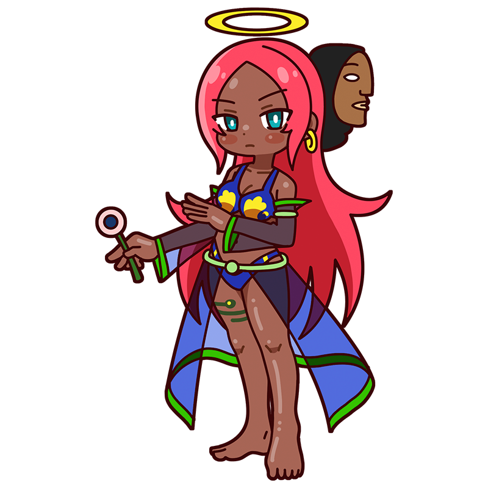

Because I can't find it,
that's what makes it interesting.
Paradise, and myself.
Gauguin
To discover who we are,
the Muse seeks a paradise of dazzling colors
A Muse of Post-Impressionism. She abandoned a successful business career and left civilization behind to pursue her ideals. She prefers a quiet life, painting in vivid colors while searching for a world of her own. Yet for some reason, she can't leave the boisterous Van Gogh alone.
Style
Hometown
France
Classics
- "Where Do We Come From? What Are We? Where Are We Going?"
- "Spirit of the Dead Watching"
- "Vision After the Sermon" etc.
This is the Gauguin piece!
Where Do We Come From?
What Are We?
Where Are We Going?
Where Are We Going? image">
Gauguin's most famous work. Amid debt, illness, and the devastating loss of his beloved daughter Aline at a young age, he painted this monumental work as his artistic culmination. He even attempted suicide by poisoning himself after completing it. Set in Tahiti, the painting presents a baby on the right and an old woman on the left, suggesting the course of human life. As its title suggests, it asks the universal question: Where do we come from, and what are we?
Year
1897-1898
Medium
Oil on canvas
Dimension
139.1 cm x 374.6 cm
Collection
Museum of Fine Arts, Boston
Who is Gauguin?
Paul Gauguin
A celebrated Post-Impressionist painter, Gauguin first found success as a stockbroker in France before abandoning his career for art and moving to Tahiti in search of an earthly paradise. Despite illness and poverty, he continued painting local people and myths, developing bold colors and a distinctive style that influenced later artists, including Picasso. He also associated with artists including Van Gogh, whom he lived with briefly in France, and Sérusier, whom he taught.
Full Name
Eugène Henri Paul Gauguin
Born
June 7, 1848
Died
May 8, 1903(aged 54)